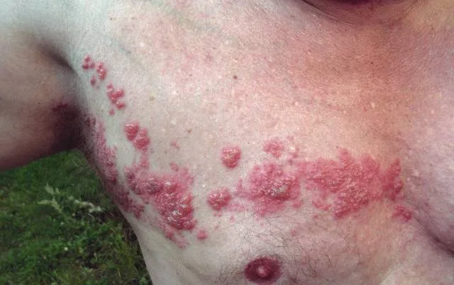
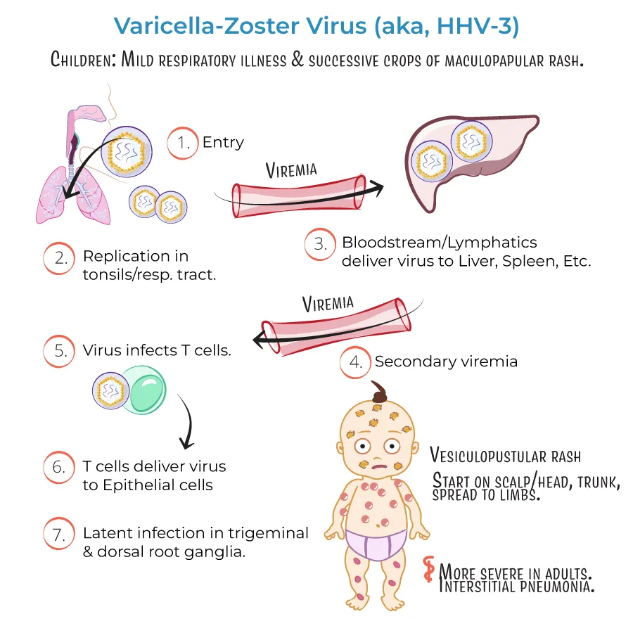
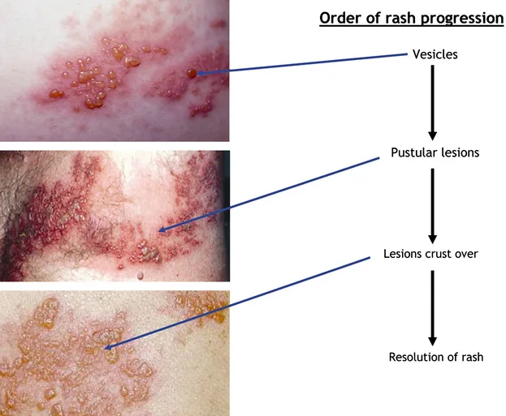

Expanded Nursing Uganda Explanation
Herpes zoster should be understood beyond a short definition. Link the concept to patient history, focused assessment, common risks, nursing priorities, documentation and evaluation of outcomes.
01 Overview
Herpes Zoster, commonly known as shingles, is a viral disease characterized by a painful skin rash with blisters in a localized area on the body. It is caused by the reactivation of the Varicella-Zoster Virus (VZV) , the same virus that causes varicella (chickenpox) .
- The incubation period ranges from 7 to 21 days.
- The total course of the disease is 10 days to 5 weeks from onset to full recovery.
- Viral Disease: This signifies that the condition is caused by a virus, specifically VZV.
- Painful Skin Rash with Blisters: This describes the primary and most characteristic clinical manifestation. The rash typically involves erythema (redness) and clusters of vesicles (small, fluid-filled blisters) that often break, crust over, and heal within 2 to 4 weeks. The pain can be severe and is a hallmark symptom.
- Localized Area on the Body: The rash usually appears in a dermatomal pattern, meaning it follows the distribution of a single sensory nerve root. This typically results in a band-like rash on one side of the body or face, rarely crossing the midline.
- Reactivation of Varicella-Zoster Virus (VZV): Primary Infection (Chickenpox): When an individual is first infected with VZV, they develop chickenpox. After the chickenpox resolves, the virus is not eliminated from the body.
- Latency: Instead, VZV travels along sensory nerves and remains dormant (latent) in the dorsal root ganglia (collections of nerve cells) near the spinal cord, or cranial nerve ganglia, for years or even decades.
- Reactivation (Shingles): At a later time, often due to a decline in cell-mediated immunity (which naturally occurs with aging or can be caused by immunosuppression), the dormant VZV can reactivate. When it reactivates, it travels back down the sensory nerve fibers to the skin, causing the characteristic rash and pain of shingles.
Understanding the etiology (causes) and pathophysiology (how the disease develops and progresses) of Herpes Zoster (shingles) is crucial for appreciating its clinical presentation, complications, and treatment.
The sole etiologic agent of Herpes Zoster is the Varicella-Zoster Virus (VZV) , a double-stranded DNA virus belonging to the Herpesviridae family, specifically the Alphaherpesvirinae subfamily.
The initial exposure to VZV typically occurs during childhood, leading to varicella , commonly known as chickenpox. This is an acute, generalized, highly contagious infection characterized by a widespread vesicular rash.
- During chickenpox, the virus infects keratinocytes, resulting in the characteristic skin lesions. It also disseminates hematogenously (via the bloodstream) and infects neurons.
- After the primary infection resolves, the VZV is not eliminated from the body. Instead, it establishes a state of latency .
- The virus travels retrograde (backward) along sensory nerve fibers from the infected skin or mucous membranes to the associated dorsal root ganglia (DRG) of the spinal cord or cranial nerve ganglia (e.g., trigeminal, geniculate).
- In the DRG, the viral genome persists within the neuronal nuclei in a non-replicating form. During latency, only a few viral genes, known as latency-associated transcripts (LATs), are expressed, which play a role in maintaining latency and preventing apoptosis of the infected neurons. The host's immune system, particularly cell-mediated immunity (T-cells), keeps the virus in check, preventing its reactivation.
Herpes Zoster occurs when the latent VZV reactivates. This reactivation is almost always due to a decline in VZV-specific cell-mediated immunity (CMI).
- Aging: The most common trigger. As individuals age, their immune system naturally weakens (immunosenescence), leading to a decline in VZV-specific T-cell numbers and function.
- Immunosuppression: Any condition or treatment that weakens the immune system can trigger reactivation. Examples include: HIV/AIDS
- Organ transplantation
- Malignancies (e.g., leukemia, lymphoma)
- Chemotherapy and radiation therapy
- Systemic corticosteroids or other immunosuppressive drugs.
- Stress, Trauma, Illness: Acute physical or emotional stress, local trauma to the dermatome, or other severe illnesses (e.g., surgery) can transiently depress CMI and potentially trigger reactivation, though these are less consistently proven factors than aging or overt immunosuppression.
- Upon reactivation, the latent VZV within the DRG begins to replicate.
- The newly replicated virions travel anterograde (forward) down the sensory nerve axons to the sensory nerve endings in the skin of the corresponding dermatome.
- The virus infects epidermal cells (keratinocytes), leading to cell lysis, inflammation, and the characteristic skin lesions.
- The inflammatory process also affects the sensory nerve itself, causing ganglionitis (inflammation of the ganglion), neuritis (inflammation of the nerve), and sometimes myelitis (inflammation of the spinal cord), which accounts for the severe pain associated with shingles.
- Prodromal Phase: Before the rash appears, patients often experience prodromal symptoms in the affected dermatome, including pain (burning, throbbing, stabbing, itching), tingling, numbness, or hypersensitivity. This pain can sometimes be mistaken for other conditions (e.g., cardiac pain, appendicitis). Systemic symptoms like fever, headache, and malaise may also occur.
- Acute Eruptive Phase: Erythematous macules (red spots) and papules (small raised bumps) appear in a dermatomal distribution.
- These rapidly progress to groups of clear, fluid-filled vesicles (blisters) on an erythematous base.
- The vesicles become pustular (pus-filled) over several days, then crust over, typically healing in 2 to 4 weeks.
- The lesions are unilateral and generally do not cross the midline, reflecting the innervation of a single sensory ganglion.
- New lesions may continue to appear for several days.
- Resolution: As the lesions heal, they can leave behind temporary or permanent changes in skin pigmentation (hypo- or hyperpigmentation) and sometimes scarring.
- Pain: Pain is present throughout the eruptive phase and can persist after the rash resolves. This persistent pain is known as Postherpetic Neuralgia (PHN) , a major complication of shingles. The exact mechanisms of PHN are complex but involve nerve damage, sensitization, and changes in the central nervous system.
- Even after reactivation, the host's immune system attempts to control the infection. VZV-specific T-cell responses limit viral spread and promote healing.
- However, the immune response may not be sufficient to prevent the severe nerve damage that leads to chronic pain.
- The appearance of rash typically indicates active viral replication and an ongoing inflammatory process.
Herpes Zoster (shingles) occurs due to the reactivation of the latent Varicella-Zoster Virus (VZV). This reactivation is primarily triggered by a decline in VZV-specific cell-mediated immunity (CMI). Therefore, anything that compromises this immune response increases the risk.
- Advanced Age: The incidence of shingles increases dramatically with age. It is most common in individuals over 50 years old, with the risk continuing to rise significantly with each decade of life.
- Immunosenescence: As people age, their immune system naturally undergoes a process called immunosenescence, leading to a gradual decline in the strength and effectiveness of cell-mediated immunity, particularly VZV-specific T-cells. This makes it harder for the immune system to keep the latent virus suppressed.
Any condition or treatment that weakens the immune system, especially cell-mediated immunity, significantly increases the risk of shingles and can lead to more severe, prolonged, or atypical presentations.
- HIV/AIDS: Individuals with HIV infection, particularly those with lower CD4+ T-cell counts, have a substantially increased risk of shingles, often occurring at a younger age.
- Malignancies: Cancers that directly affect the immune system, such as leukemias, lymphomas, and Hodgkin's disease, are strong risk factors. Other solid tumors, especially if advanced, can also increase risk.
- Organ or Stem Cell Transplantation: Patients undergoing organ or hematopoietic stem cell transplantation receive powerful immunosuppressive medications to prevent rejection, making them highly susceptible to VZV reactivation.
- Autoimmune Diseases: Conditions like systemic lupus erythematosus, rheumatoid arthritis, Crohn's disease, or psoriasis, and the immunosuppressive treatments used to manage them, increase the risk.
- Immunosuppressive Medications: Corticosteroids: High-dose or prolonged systemic corticosteroid use is a well-known risk factor.
- Biologic Agents: Drugs that target specific components of the immune system (e.g., TNF-alpha inhibitors, IL-17 inhibitors) used for autoimmune conditions can increase risk.
- Chemotherapy and Radiation Therapy: These treatments for cancer severely suppress the immune system.
- Prior History of Chickenpox: A history of having chickenpox is a prerequisite for developing shingles. Without a primary VZV infection, there is no latent virus to reactivate.
- Severity of Primary Infection: Some studies suggest a more severe primary chickenpox infection might correlate with a higher risk of shingles later in life, possibly due to a larger viral load establishing latency.
- Physical Trauma: Localized physical trauma or surgery affecting a specific dermatome has occasionally been implicated as a trigger for shingles in that dermatome, possibly by inducing a localized decline in immunity or directly affecting the nerve.
- Psychological Stress: While anecdotal evidence is common, scientific evidence linking psychological stress directly to VZV reactivation is less robust than for other risk factors. However, severe psychological stress can suppress the immune system, potentially contributing to reactivation.
- Female Sex: Some studies suggest a slightly higher incidence in females, but this is not consistently observed across all populations.
- Race/Ethnicity: Certain demographic groups may have slightly varying incidence rates, though this is likely related to other underlying risk factors.
- Genetics: While not fully understood, there might be some genetic predisposition to VZV reactivation.
- Infancy: Shingles can rarely occur in infants who were exposed to VZV in utero or during early infancy, especially if their mothers had chickenpox during pregnancy.
- Prior Episode of Shingles: While rare, it is possible to have more than one episode of shingles, especially in severely immunocompromised individuals. However, having one episode confers some protective immunity, so subsequent episodes are generally less common than the initial one.
The clinical manifestations of Herpes Zoster (shingles) typically follow a predictable progression, characterized by both systemic symptoms and the distinctive skin rash. It usually begins with prodromal symptoms, followed by an acute eruptive phase, and then resolution.
This phase usually precedes the appearance of the skin rash by 2 to 4 days , but can last up to a week. It is often the first indication that shingles is developing.
- Pain: This is the most common and characteristic prodromal symptom. The pain is localized to the dermatome (area of skin supplied by a single sensory nerve) where the rash will eventually appear. Descriptions of pain include: Burning, tingling, itching, throbbing, aching, stinging, or stabbing sensation.
- Hyperesthesia: Increased sensitivity to touch or temperature in the affected area.
- The intensity can range from mild discomfort to severe, debilitating pain, sometimes mimicking other conditions like cardiac pain (if thoracic dermatomes are involved), appendicitis, or pleurisy, leading to misdiagnosis.
- Paresthesias: Numbness, prickling, or "pins and needles" sensation.
- Systemic Symptoms (less common, but can occur): Malaise (general feeling of unwellness)
- Headache
- Photophobia (sensitivity to light)
- Low-grade fever
- Fatigue
This phase begins with the appearance of the rash and typically lasts for 7 to 10 days , though healing can take 2 to 4 weeks.
- Erythematous Macules and Papules: The rash initially appears as a cluster of red spots (macules) and small raised bumps (papules) on an inflamed base within the affected dermatome.
- Vesicles: Within 12-24 hours, these lesions rapidly progress to groups of clear, fluid-filled vesicles (blisters) on an erythematous and edematous (swollen) base. The vesicles are typically uniform in size within a cluster.
- Pustules: Over the next 3-4 days, the vesicles often become cloudy and pustular (filled with pus).
- Crusting: The pustules eventually break open, or dry up, forming crusts (scabs) within 7-10 days of onset.
- Healing: The crusts then fall off, usually leaving behind temporary post-inflammatory hyperpigmentation (darkening) or hypopigmentation (lightening), and sometimes scarring, particularly if the lesions were severe or became secondarily infected.
- Dermatomal Pattern: The hallmark of shingles is its unilateral, dermatomal distribution. This means the rash is confined to the area of skin supplied by a single sensory nerve root (dermatome) and typically does not cross the midline of the body.
- Common Locations: Thoracic (T3-T12): Most common (50-60% of cases), appearing as a band around the chest or abdomen.
- Cervical (C2-C8): Affects the neck, shoulder, and arm.
- Lumbar (L1-L5): Affects the lower back, groin, and leg.
- Sacral (S1-S4): Affects the buttocks, perineum, and posterior thigh.
- Cranial Nerves (especially Trigeminal - V1): Ophthalmic zoster (herpes zoster ophthalmicus) involves the first division of the trigeminal nerve (V1), affecting the forehead, scalp, and potentially the eye, which can lead to severe ocular complications.
- The pain experienced during the prodromal phase intensifies and persists throughout the eruptive phase. It can be severe and debilitating, often described as burning, deep aching, or electric shock-like.
- The pain is due to inflammation and damage to the sensory nerve and ganglion.
- Once the lesions crust over and heal, the acute pain generally subsides over weeks to months.
- However, a significant number of patients, especially older individuals, will experience Postherpetic Neuralgia (PHN) , which is persistent pain in the affected dermatome for months or even years after the rash has cleared. PHN is considered a distinct complication, and we will discuss it in more detail later.
- Unilateral and Dermatomal: Unlike chickenpox, which is generalized, shingles is typically localized to one side of the body following a nerve pathway.
- Painful: The pain is usually a prominent feature, often preceding the rash and sometimes persisting after it resolves.
- Clustering of Vesicles: The lesions appear in distinct clusters rather than randomly scattered.
While the classic presentation of Herpes Zoster (unilateral, dermatomal rash with pain) is well-recognized, it's nice to be aware of atypical forms and the wide array of potential complications, some of which can be severe and life-altering.
These presentations can make diagnosis challenging or indicate a more widespread disease.
- Zoster Sine Herpete (Zoster without rash): This is a rare but significant atypical presentation where patients experience the prodromal pain, itching, or paresthesia in a dermatomal distribution, but without the characteristic skin rash .
- Diagnosis is difficult and often relies on serological testing (detecting VZV DNA or a significant rise in VZV antibody titers) or polymerase chain reaction (PCR) from a tissue biopsy if there are any subtle skin changes.
- It can cause diagnostic confusion, with the pain being misdiagnosed as other conditions (e.g., musculoskeletal pain, angina).
- Disseminated Zoster: Occurs when the VZV spreads beyond the initial dermatome, either with involvement of three or more dermatomes or, more commonly, with widespread cutaneous lesions that resemble chickenpox (generalized vesicular rash).
- This usually occurs in immunocompromised individuals (e.g., HIV/AIDS, cancer patients, transplant recipients, those on high-dose corticosteroids).
- Disseminated zoster is a serious condition as it indicates viremia and carries a significant risk of visceral involvement (e.g., VZV pneumonia, hepatitis, encephalitis), which can be life-threatening.
- Zoster Ophthalmicus (Herpes Zoster Ophthalmicus - HZO): Involves the ophthalmic division (V1) of the trigeminal nerve .
- The rash affects the forehead, scalp, and nose on one side.
- Hutchinson's Sign: The presence of lesions on the side or tip of the nose (supplied by the nasociliary branch of V1) indicates a high risk of ocular involvement . This is a critical sign for early ophthalmological consultation.
- Complications: Can lead to severe and chronic eye problems, including conjunctivitis, episcleritis, keratitis, uveitis, glaucoma, retinopathy, and optic neuritis, potentially resulting in permanent vision loss.
- Zoster Oticus (Ramsay Hunt Syndrome Type II): Involves the geniculate ganglion of the facial nerve (cranial nerve VII) , and sometimes the vestibulocochlear nerve (cranial nerve VIII).
- Classic Triad: Ipsilateral (same side) facial paralysis, painful vesicular rash on the external ear canal or auricle , and sometimes in the mouth.
- Other Symptoms: May include tinnitus, hearing loss, vertigo, nausea, and taste disturbances.
- Complications: Permanent facial paralysis, hearing loss, or balance issues.
- Motor Zoster: While primarily a sensory nerve infection, VZV can occasionally spread to adjacent motor nerve roots.
- Can cause segmental motor weakness or paralysis in the muscles corresponding to the affected dermatome, occurring days to weeks after the rash.
- Most commonly affects the upper extremities, diaphragm, or lower extremities. Prognosis for recovery is variable.
- Bullous or Hemorrhagic Zoster: The vesicles may be unusually large (bullous) or filled with blood (hemorrhagic), which can be alarming but does not necessarily indicate a worse prognosis unless associated with immunocompromised states.
- Necrotizing Zoster: Severe, deep skin lesions leading to tissue necrosis, often seen in severely immunocompromised individuals. Can result in significant scarring.
Beyond the atypical presentations, several direct and indirect complications can arise.
- Postherpetic Neuralgia (PHN): The most common and debilitating complication. Persistent or recurrent pain in the dermatomal distribution of the original rash that lasts for more than 3 months after the rash has healed. Character: The pain can be severe, burning, stabbing, throbbing, or aching, often accompanied by allodynia (pain from stimuli that are not normally painful, e.g., light touch of clothing) and hyperalgesia (increased sensitivity to painful stimuli).
- Risk Factors: Increases significantly with age, greater acute pain, more severe rash, and ophthalmic involvement.
- Impact: Can severely impact quality of life, leading to sleep disturbances, depression, anxiety, social isolation, and functional impairment.
- Ocular Complications (from Zoster Ophthalmicus): As mentioned above, can include chronic conjunctivitis, keratitis (corneal inflammation, leading to scarring and vision loss), uveitis, glaucoma, and even optic neuropathy. Requires urgent ophthalmological intervention.
- Neurological Complications (beyond PHN): Meningoencephalitis/Encephalitis: Rare but serious, especially in immunocompromised patients, where VZV directly infects the brain and meninges. Can cause headache, fever, confusion, seizures, focal neurological deficits.
- Vasculopathy/Stroke: VZV vasculopathy can cause inflammation and narrowing of cerebral arteries, leading to ischemic stroke or transient ischemic attacks, often occurring months after the acute rash, particularly with HZO.
- Myelitis: Inflammation of the spinal cord.
- Guillain-Barré Syndrome: Rarely, VZV infection has been implicated as a trigger.
- Bladder Dysfunction: If sacral dermatomes are involved.
- Secondary Bacterial Skin Infections: The open vesicles and skin breakdown provide an entry point for bacteria (commonly Staphylococcus aureus or Streptococcus pyogenes ).
- Can lead to cellulitis, impetigo, or even more serious infections like fasciitis or sepsis.
- Scarring and Pigmentation Changes: The rash can leave permanent scars, especially if lesions were deep, severe, or secondarily infected.
- Post-inflammatory hypo- or hyperpigmentation is common.
- Psychological Impact: Chronic pain (PHN) and disfiguring scars can lead to depression, anxiety, social withdrawal, and a significant decrease in quality of life.
The diagnosis of Herpes Zoster (shingles) is primarily clinical , based on the characteristic history and physical examination findings. However, laboratory confirmation can be helpful in atypical cases or when complications are suspected.
- Patient History: Prodromal Symptoms: Inquire about pain, burning, tingling, itching, or hyperesthesia localized to a specific dermatome, preceding the rash by several days.
- Rash Onset and Progression: Ask about the appearance of a rash, its distribution (unilateral, dermatomal), and how it has evolved (macules to papules to vesicles to pustules to crusts).
- Pain Characteristics: Elicit details about the quality, intensity, and impact of the pain.
- Previous Chickenpox: Confirm a history of prior varicella (chickenpox) infection.
- Risk Factors: Assess for immunosuppression, age, or other predisposing factors.
- Exposure: Rule out recent exposure to chickenpox, which would be inconsistent with shingles (shingles is reactivation, not new infection).
- Physical Examination: Characteristic Rash: The hallmark finding is a unilateral, dermatomal rash consisting of clusters of vesicles on an erythematous base.
- Location: Confirm that the rash respects the midline and follows a sensory nerve distribution (e.g., thoracic, cervical, trigeminal).
- Lesion Stage: Observe the stage of the lesions (macules, papules, vesicles, pustules, crusts).
- Associated Findings: Check for hyperesthesia or allodynia in the affected dermatome.
- Atypical Sites: Inspect for involvement of the eye (Hutchinson's sign for V1 zoster), ear (Ramsay Hunt syndrome), or mucous membranes.
- Lymphadenopathy: Regional lymphadenopathy (swollen lymph nodes) may be present.
Laboratory testing is generally not required for typical cases of shingles but is valuable in:
- Atypical presentations: Such as zoster sine herpete, disseminated zoster, or when the rash is not clearly dermatomal.
- Immunocompromised patients: Where presentation might be altered or viral dissemination is a concern.
- Severe cases or suspected complications: To guide specific antiviral therapy or confirm VZV involvement in internal organs.
- Differentiating from other conditions: When the diagnosis is uncertain (e.g., herpes simplex virus (HSV) infection, contact dermatitis, insect bites, impetigo).
- Direct Fluorescent Antibody (DFA) or Immunofluorescence Assay: Specimen: Scrapings from the base of a fresh vesicle (Tzanck smear can also be used initially but is less specific).
- Method: Detects VZV antigens within the cells.
- Advantages: Rapid results.
- Disadvantages: Less sensitive than PCR, especially if lesions are crusted.
- Polymerase Chain Reaction (PCR): Specimen: Vesicle fluid, scrapings, crusts, cerebrospinal fluid (CSF) if CNS involvement is suspected, blood (in disseminated disease).
- Method: Detects VZV DNA.
- Advantages: Highly sensitive and specific, considered the gold standard for confirming VZV presence. Can detect virus even in crusted lesions or CSF.
- Disadvantages: Can take longer for results compared to DFA.
- Viral Culture: Specimen: Vesicle fluid.
- Method: Attempts to grow VZV in cell culture.
- Advantages: Can confirm live virus.
- Disadvantages: Poor sensitivity (VZV is difficult to grow in culture), slow (can take days to weeks), and often negative, especially in later stages. Rarely used now.
- Serology (Antibody Testing): Specimen: Blood sample.
- Method: Detects VZV-specific antibodies (IgM, IgG).
- VZV IgM: Indicates recent or reactivated infection.
- VZV IgG: Indicates past exposure/immunity. A fourfold rise in IgG titer between acute and convalescent (2-4 weeks later) samples can indicate recent infection, but this is retrospective and not helpful for acute diagnosis.
- Limitations: Not ideal for acute diagnosis of shingles as IgM can be absent, especially in older or immunocompromised patients. More useful for epidemiological studies or confirming VZV in atypical cases where the rash is absent.
It's important to consider other conditions that can mimic shingles, especially in the early stages or with atypical presentations:
- Herpes Simplex Virus (HSV) infection: Can cause vesicular lesions, but usually recurrent and often in the same location (e.g., lips, genitals), and less likely to be strictly dermatomal.
- Contact Dermatitis: Localized inflammatory skin reaction, often itchy, but usually not vesicular in a dermatomal pattern.
- Insect Bites: Can cause clustered lesions but lack the characteristic progression and pain.
- Impetigo: Bacterial skin infection with honey-crusted lesions.
- Cellulitis: Bacterial skin infection, typically diffuse redness and swelling, not vesicular.
- Scabies: Itchy rash, but typically in web spaces, wrists, and other areas, with burrows.
- Drug Eruptions: Skin reactions to medications.
- Other Pain Syndromes: In the prodromal phase, the pain can be confused with cardiac pain, pleurisy, appendicitis, cholecystitis, sciatica, or musculoskeletal pain.
The primary goals of managing Herpes Zoster (shingles) are to:
- Shorten the duration and severity of the acute painful rash.
- Prevent or reduce the incidence and severity of complications , particularly Postherpetic Neuralgia (PHN).
- Alleviate acute pain.
Treatment strategies generally involve antiviral medications, pain management, and supportive care.
Antiviral medications are the cornerstone of Herpes Zoster treatment. They work by inhibiting VZV replication, thereby reducing viral shedding, hastening lesion healing, and decreasing the severity and duration of acute pain. Most importantly, early initiation of antivirals is crucial for reducing the risk of PHN.
- Indications: Antivirals are most effective when initiated within 72 hours of rash onset . However, they may still be beneficial if started beyond 72 hours in: Individuals at high risk for severe disease or complications (e.g., older adults, immunocompromised patients).
- Patients with new lesions still appearing.
- Patients with ophthalmic zoster or other cranial nerve involvement.
- Recommended Antiviral Agents (Oral): Acyclovir: The oldest and most studied antiviral. Dosage: 800 mg orally 5 times a day (every 4 hours while awake) for 7 to 10 days.
- Considerations: Requires frequent dosing, which can affect adherence.
- Valacyclovir: A prodrug of acyclovir with better bioavailability. Dosage: 1000 mg orally 3 times a day for 7 days.
- Considerations: More convenient dosing (3 times daily) improves adherence and is generally preferred.
- Famciclovir: Another prodrug, converted to penciclovir. Dosage: 500 mg orally 3 times a day for 7 days.
- Considerations: Similar efficacy and convenience to valacyclovir.
- Intravenous Antivirals: Indication: Used for severe cases, disseminated zoster, immunocompromised patients, or those with central nervous system involvement (e.g., encephalitis, myelitis).
- Agent: Intravenous acyclovir (e.g., 10 mg/kg every 8 hours) is typically used in a hospital setting.
Managing the pain associated with acute zoster is critical for patient comfort and can help prevent the development of chronic pain.
- Non-opioid Analgesics: NSAIDs (Nonsteroidal Anti-inflammatory Drugs): Ibuprofen, naproxen for mild to moderate pain.
- Acetaminophen: For mild pain.
- Neuropathic Pain Agents: These medications are often started early, especially in older patients or those with severe pain, to manage the neuropathic component and reduce the risk of PHN.
- Gabapentin and Pregabalin: Anticonvulsants that are effective for neuropathic pain.
- Tricyclic Antidepressants (TCAs): Amitriptyline, nortriptyline (low doses) can help with neuropathic pain and promote sleep.
- Topical Analgesics: Lidocaine patches or gels: Can provide localized pain relief.
- Capsaicin cream: Can be used after lesions have healed for PHN, but not on open lesions.
- Corticosteroids (Adjunctive Therapy): Role: The use of systemic corticosteroids in acute zoster is controversial and generally not routinely recommended in immunocompetent patients, as studies have shown limited benefit in preventing PHN and potential risks of immunosuppression.
- Potential Use: May be considered in specific cases of severe inflammation or cranial nerve involvement (e.g., Ramsay Hunt syndrome) in conjunction with antivirals, under careful medical supervision, to reduce acute inflammation and nerve damage. They are contraindicated in immunocompromised patients.
- Opioid Analgesics: For severe acute pain, short-term use of opioid analgesics may be necessary, but with caution due to side effects and addiction potential.
- Skin Care: Keep lesions clean and dry: To prevent secondary bacterial infection.
- Loose-fitting clothing: To minimize irritation.
- Cool compresses or colloidal oatmeal baths: Can soothe itching and discomfort.
- Avoid scratching: To prevent scarring and secondary infection.
- Topical antibiotics: Only if secondary bacterial infection is suspected.
- Eye Care (for Zoster Ophthalmicus): Urgent ophthalmological consultation is mandatory.
- May require topical antiviral eye drops (e.g., ganciclovir gel) or oral antivirals, and topical corticosteroids (only under ophthalmologist supervision).
- Patient Education: Educate about the contagious nature of the virus to susceptible individuals (those who have not had chickenpox or been vaccinated).
- Advise to avoid contact with pregnant women, infants, and immunocompromised individuals.
- Explain the course of the disease, potential complications, and importance of adherence to treatment.
PHN is a chronic pain condition that requires specific management strategies, often involving a multimodal approach.
- First-line Agents: Gabapentin and Pregabalin: Commonly used.
- Tricyclic Antidepressants (TCAs): Amitriptyline, nortriptyline.
- Lidocaine patches: Topical relief.
- Second-line Agents: Capsaicin patches (high concentration): Applied by a healthcare professional.
- Opioids: Used cautiously and as a last resort due to risks.
- Tramadol: A weaker opioid.
- Other Therapies: Pain clinics, nerve blocks, physical therapy, psychological support.
Nursing care for a patient with Herpes Zoster focuses on alleviating symptoms, preventing complications, promoting healing, and providing comprehensive education.
- Acute Pain related to inflammation and nerve damage secondary to Varicella-Zoster Virus reactivation.
- Impaired Skin Integrity related to vesicular eruption, inflammation, and potential secondary infection.
- Risk for Infection related to open lesions and compromised skin barrier.
- Disrupted Body Image related to visible skin lesions and potential scarring.
02 Nursing Uganda Clinical Lens
Use Herpes zoster as a practical nursing topic, not only a memorized definition. Connect structure, movement, pain, circulation, nerve function and safe mobility.
- What to understand first: define herpes zoster, identify the normal or expected pattern, then explain what changes when the patient is unwell.
- Why it matters in care: the nurse must recognize risk early, explain findings clearly, document accurately and know when to escalate.
- How to revise it: connect each point to assessment, nursing diagnosis or care problem, intervention, rationale and evaluation.
03 Assessment Guide
- Pain score, site, onset, deformity, swelling, bruising and ability to move.
- Distal pulse, capillary refill, colour, warmth, sensation and movement.
- Skin integrity, wounds, cast tightness, traction alignment and pressure areas.
04 Nursing Priorities, Rationales and Outcomes
- Immobilize and protect the affected part while preventing further injury.
- Control pain and swelling while monitoring neurovascular status.
- Prevent complications such as compartment syndrome, infection, pressure injury and venous stasis.
The rationale for these priorities is patient safety: nursing actions should prevent deterioration, reduce discomfort, support recovery and create clear evidence for the next caregiver.
- Expected outcome: Pain is reduced, circulation and sensation remain intact, swelling is controlled and the patient mobilizes safely within the care plan.
05 Patient Teaching and Revision Check
- Explain herpes zoster in simple language the patient or caregiver can repeat back.
- Teach warning signs, medicine or follow-up instructions, hygiene or lifestyle points where relevant.
- For exams, prepare a short answer using: definition, causes or risk factors, signs, assessment, management, complications and prevention.
- For ward practice, document baseline findings, actions taken, patient response and the plan for review.
Illustrations and Diagrams (7)





Related Video Lectures
Watch nursing lecture videos on YouTube for this topic. Opens in a new tab.
Watch on YouTubeExternal link: YouTube may use its own cookies and terms. Nursing Uganda is not affiliated with YouTube.